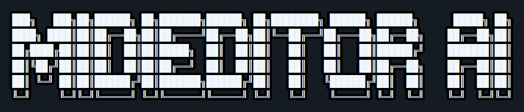
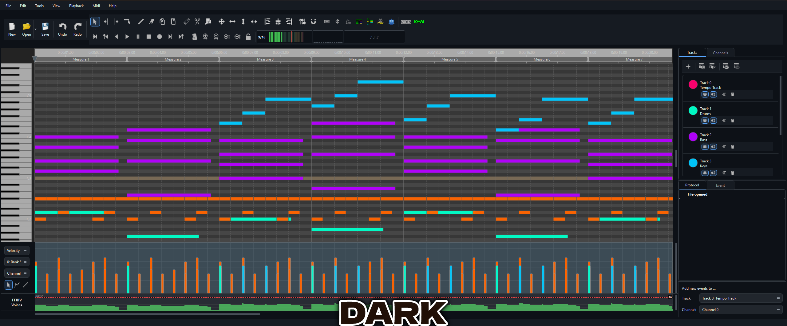

The AI-Powered MIDI Editor
Compose • Edit • Transform • Play — with an intelligent copilot that understands music.
✨ Features
Everything you need for MIDI editing — plus an AI that actually helps.
MidiPilot AI Copilot
15 AI tools, Agent & Simple mode, natural language MIDI editing. Compose melodies, add harmonies, fix arrangements — just ask.
Guitar Pro Import
Open GP1 through GP8 files directly. 30+ years of Guitar Pro formats, from 1993 DOS-era tabs to 2024 GP8, all auto-detected by header.
FFXIV Bard Mode
One-click FFXIV channel fixer for MidiBard2 — deterministic algorithm, no AI needed. Guitar variant switching, range clamping, validation.
FluidSynth & Audio Export
Built-in FluidSynth synthesizer with SoundFont management. Export to WAV, FLAC, OGG, or MP3 with the bundled LAME encoder.
7 Themes & MIDI Visualizer
Dark, Light, Sakura, AMOLED, Material Dark, System, Classic. 10 color presets for note bars. Real-time MIDI visualizer for playback.
Professional Piano Roll
Full-featured piano-roll editor with velocity/CC editing, quantization, copy/paste, recording, multi-track support, and smooth playback scrolling.
📷 Showcase
See MidiEditor AI in action.
🎨 Theme Preview
6 built-in themes — click to preview.

🆕 What’s New
v1.2.1 — April 2026
- 72 bug fixes across the entire codebase — memory leaks, crashes, parser hardening
- Guitar Pro 5 parser — 4 byte-alignment bugs fixed; GP5 files that failed now load correctly
- MidiPilot timestamps — cleaner chat timestamp display across all themes
⚖️ MidiEditor AI vs. Original
| Feature | Original MidiEditor | AI Edition |
|---|---|---|
| AI Copilot (MidiPilot) | ✖ | ✔ |
| Guitar Pro Import (GP1–GP8) | ✖ | ✔ |
| FFXIV Bard Mode | ✖ | ✔ |
| FluidSynth Playback | ✖ | ✔ |
| Audio Export (WAV/FLAC/MP3) | ✖ | ✔ |
| Themes | 1 | 7 |
| Note Color Presets | ✖ | 10 |
| MIDI Visualizer | ✖ | ✔ |
| SoundFont Management | ✖ | ✔ |
| Chord Detection | ✖ | ✔ |
| Split Channels to Tracks | ✖ | ✔ |
| Explode Chords to Tracks | ✖ | ✔ |
| Delete Overlaps Tool | ✖ | ✔ |
| Glue Notes Tool | ✖ | ✔ |
| Strum Tool | ✖ | ✔ |
| Convert Pitch Bend to Notes | ✖ | ✔ |
| Context Menu (Move Track/Channel/Transpose) | ✖ | ✔ |
| Octave Transpose | ✖ | ✔ |
⬇ Download
Free & open source. Windows 10/11.
Portable ZIP — extract & run. No installer needed. · Download details · All releases